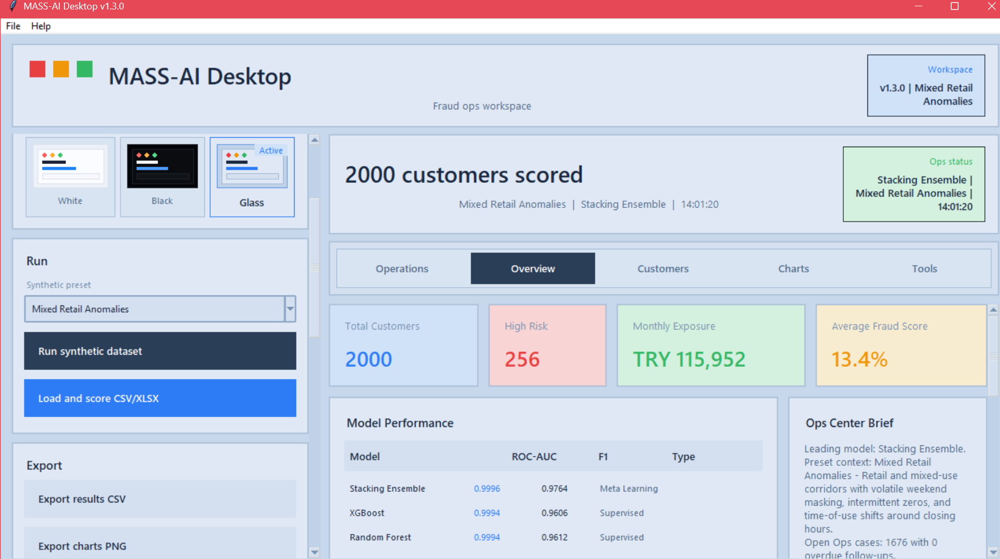

Designed as a decision-support product, not just a model demo.
The project is positioned as a proof-of-value platform for anomaly detection, suspicious meter prioritization, evidence review, and analyst case handling.
MASS-AI turns smart meter telemetry into risk signals, priority queues, and investigation-ready evidence. Today it already works as a strong prototype with desktop and Streamlit experiences. The next step is a stronger pilot platform built around Streamlit, realtime ingestion, and Rust-powered feature processing.

The project is positioned as a proof-of-value platform for anomaly detection, suspicious meter prioritization, evidence review, and analyst case handling.
MASS-AI is framed around the rollout of national smart metering infrastructure and the need to investigate high-risk consumption anomalies faster and more consistently.
The product story stays focused on the essentials: scoring, prioritization, investigation flow, and a believable pilot roadmap.
Streamlit and desktop views surface risk bands, watchlists, exposure, and analyst actions instead of raw model output alone.
Isolation Forest, XGBoost, Random Forest, Gradient Boosting, and a stacking ensemble support the main batch scoring path.
Cases, notes, history, follow-up logic, and worklist-style prioritization make the prototype feel like a real analyst tool.
Preset-driven demo data lets you show theft and anomaly patterns without waiting for access to restricted utility datasets.
The active development branch expands ingestion, telemetry handling, and near-realtime scoring for more believable pilot demos.
Risk bands, reasons, watchlists, evidence views, and recommended next steps help turn a score into an investigation story.
The product story is structured as a utility workflow: ingest, score, prioritize, investigate.
Start with synthetic demo data today, then move toward canonical long-format telemetry for pilot onboarding.
Batch scoring combines multiple models while the realtime path focuses on fast anomaly detection from live-style inputs.
Overview cards, risk mixes, customer search, and watchlists help analysts focus on the highest-impact cases first.
Evidence panels, notes, export options, and ops workflows turn the prototype into something you can actually demonstrate to firms.
These screenshots come directly from the repo assets you already have, so the site stays connected to the real prototype.
This keeps the contest pitch honest while still showing momentum.
No. The strongest and most honest positioning is a utility pilot or proof-of-value decision-support platform.
The project is shaped around analyst workflow: scoring, watchlists, evidence, case handling, and dashboard-driven triage.
The prototype works well with synthetic scenarios now, and the active roadmap pushes toward canonical long-format telemetry for real utility onboarding.
Because that work already appears in the active branch and helps explain how the prototype is evolving into a more accessible utility-facing platform.
Use this page as the public prototype front door, then keep iterating the product behind it with the Streamlit, realtime, and feature-engine work already underway in the repo.